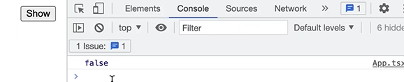

HOME
Understanding The State Hook
What we have learned about state so far..
We have learned that using the state hook, we can add state to a
component
There are few more things you need to know about the state hook.
React updates state asynchronously
This means it is not updated immediately.
Example
Let's take this handleClick function for example.
When we console.log isVisible...
We will get false even though on the line above it we set it to
true...

Explanation
So, is was not applied immediately(synchronously),
it was applied asynchronously.
Meaning in the future.
This is done for performance reasons.
Because, as part of handling an event, we might set a bunch of
different state vars...
For example...
If react rerendered the component everytime we called a set function,
we would have too many rerenders, effectively slowing down the
application.
How async improves performance
To improve performance, React takes all the updates, batches them, and
then applies them at a later time.
The 'later time' is after this event handler finishes executing...
At that point, React applies all the updates at once, rerenders the
component in the updated state.
State is stored outside of components
Let's say we have a var like this...
We know that in JS the vars of a function are scoped to that function.
That means when our function(our component) finishes execution, the
var is removed from memory.
AND THAT MEANS, when React rerenders this component it's going to call
the app function again, and our count var would be remade again and
initialized to 0 again.
So the ++ we applied before will be lost.
This is why we use the state hook(useState) to store the state outside
of this component.
So, somewhere, wherever react does react stuff...
React is going to store all the state variables for this component,
and it will remove those variables when the component is no longer
visible on the screen.
We can only use hooks at the top level of a component
Let's take these states for example...
The names we have chosen are just local identifiers in this function.
React is not aware of the names.
So when we use the state hook, we are just telling React 'Hey React, I
need to store a value.'
How React stores the values
Somewhere, in a location chosen by React, our values would get stored
in an array.
The comment in the code below simulates the array react would store
our states in...
So React relys on the order in which elements are
placed in code to apply the values to the variables.
That means we cannot initialize hooks in for loops, if statement, or
anything ever.
Create them all at the top of the component. Please.
Key Take-aways